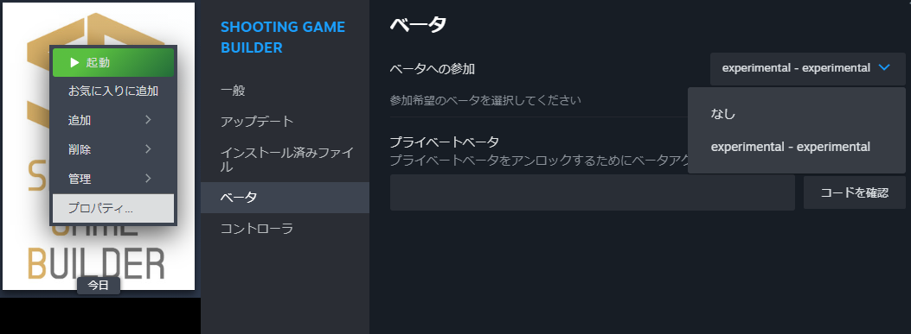
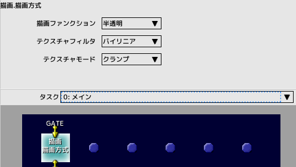

■元のページへ戻る
■元のページへ戻る
SNS
X(Twitter)アカウント
@StgBuilder
ハッシュタグ
#StgBuilder
このツールで作成したゲームは配布可能？
有料無料に関わらず可能です
ロゴの表示義務等もありません
ロゴを表示する場合はこちらをご利用ください
配布用のパッケージを作るにはこちらをご覧ください

実験的ビルド(experimental build)への切り替え方
アップデート情報の中にexperimentalビルドとかかれたバージョンを利用するには、ベータへの参加が必要になります
右クリックメニューのプロパティからベータタブを開きベータへの参加で切り替えてください
元に戻すには「なし」を選択します
experimentalビルドにはバグが含まれていたり、巻き戻りが発生する可能性があります

パッド操作ができない
Steamクライアントの設定で「Steam入力を有効にする」がONになっていると発生します
OFFにしてください
steam_appid.txtを使ったデバッグ時は必ずOFFにするようにしてください
コンフィグによっては、アプリケーション(ゲーム)が非アクティブ状態はパッド入力が無効になります

サンプルプロジェクトはどこにありますか？
ツールがインストールされたフォルダの下
/ShootingGameBuilder/samples/
にあります
Steamクライアントのアイコンの右クリックメニューから「ローカルファイルを閲覧」で
インストールフォルダを開くことが出来ます
サンプルプロジェクトの一覧はこちら

アルファチャンネルが有る画像の透明部分が反映されない
スクリプトコマンド「描画・描画方式」にて描画ファンクションを半透明に設定してください
■ページ上部へ戻る